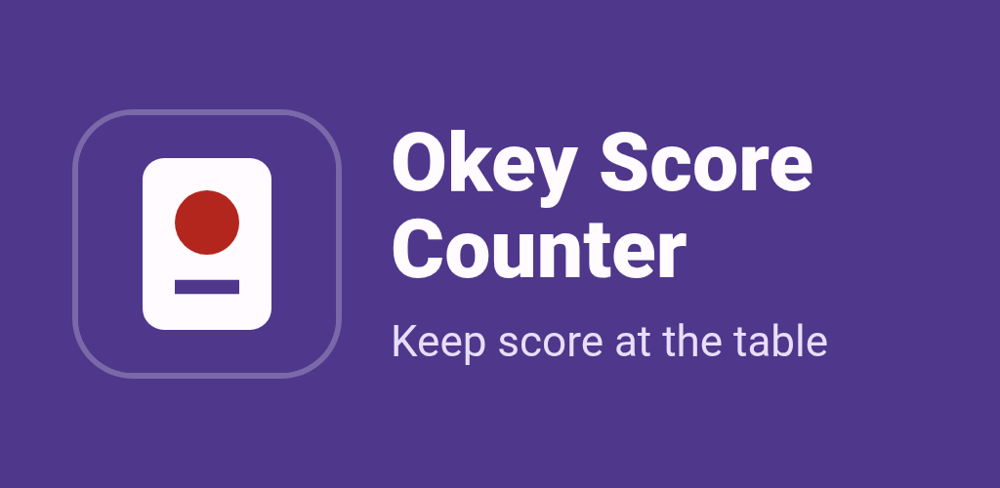
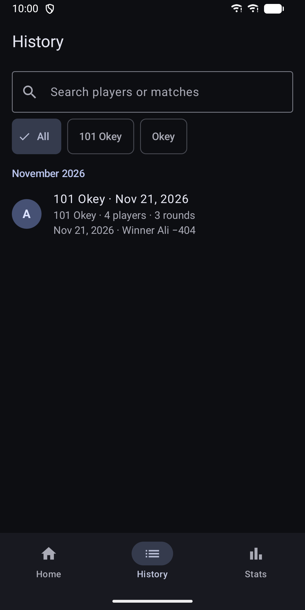

Okey Score Counter: 101 Okey
Score 101 Okey and Okey: penalties, history, player stats and a widget.





About
Keep score at the Okey table without paper. Okey Score Counter scores 101 Okey and standard Okey for 2 to 4 players, individually or in pairs (eşli). The app is available in English and Turkish. SCORING - Choose 101 Okey or Okey, individual or paired play. - Enter each round: the remaining tile sum and who finished. - One-tap options for finishing with okey, finishing from hand, no open and wrong okey or joker discard. - A live preview shows the round before you save it. - The lowest total leads, with a leader marker on the scoreboard. FIX MISTAKES - Edit any past round and all totals recalculate. - Undo a round, and restore it if you change your mind. - Change the penalty values for a match and every round recalculates. - Default rules can be edited. Existing matches keep their own rules. HISTORY AND STATS - Every match is kept in history, with search and a filter by game. - Player stats show matches, wins, win rate by game, average per round, best match, finishes and wrong okeys. SHARE - Share the scoreboard as text or as an image. - You choose what is included: the round table, and real names or Player 1, 2 and so on. WIDGET - A home-screen widget shows the totals of your current match. Tap it to open the scoreboard. PRIVACY - No account, no analytics, no tracking. - The app has no internet permission. Your data stays on your phone. - The app is excluded from cloud backup and device transfer. - You can delete one match, or all data, in the app. COMFORT - Light and dark theme, following your system setting. - Layouts for phones and tablets. - Screen reader labels and large touch targets. PURCHASE The app is a paid download on Google Play. It has no in-app purchases and no subscriptions, and every feature above is included.
Guides
- 101 Okey Scoring Rules: Points Table and Example How 101 Okey scoring works: finish bonuses, tile sums, the no-open penalty, wrong okey discards, a worked round and a round calculator.
- Okey Scoring Chart: Points for Standard Okey A scoring chart for standard Okey with finish bonuses, loser penalties, wrong okey discards, a worked four-player example and pair scoring.